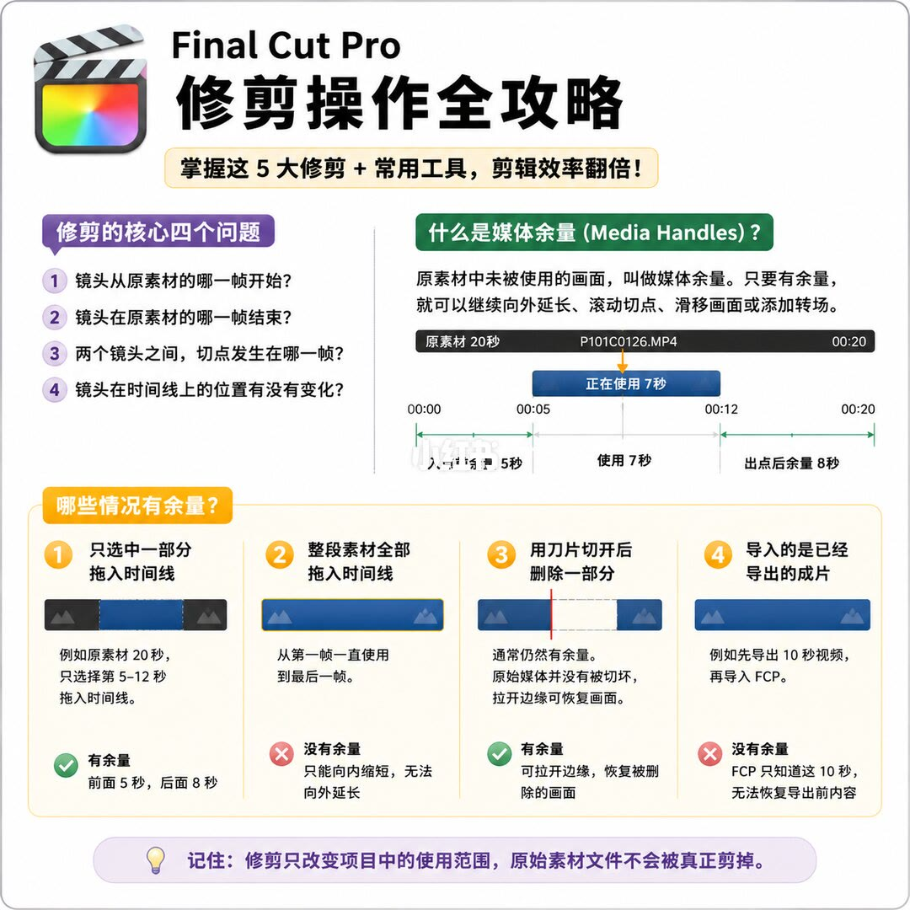
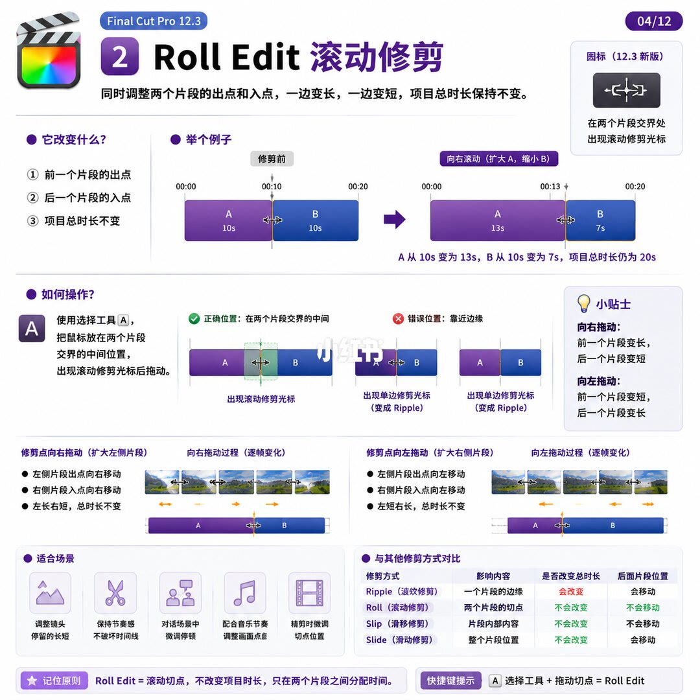
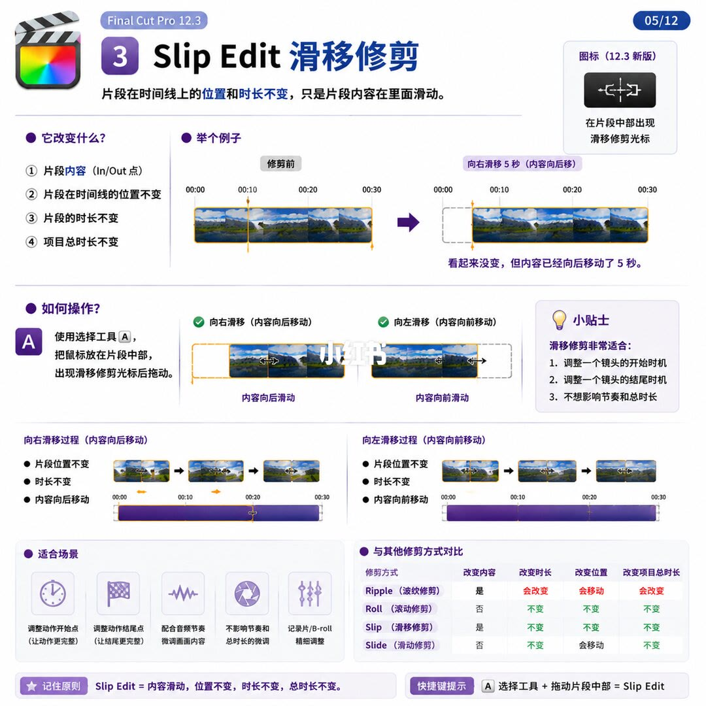
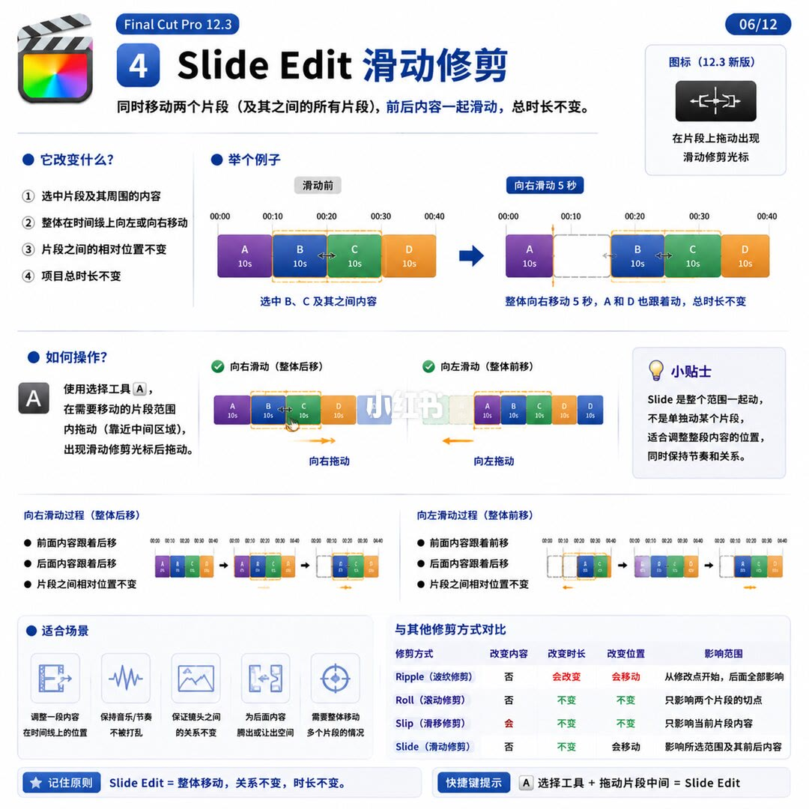
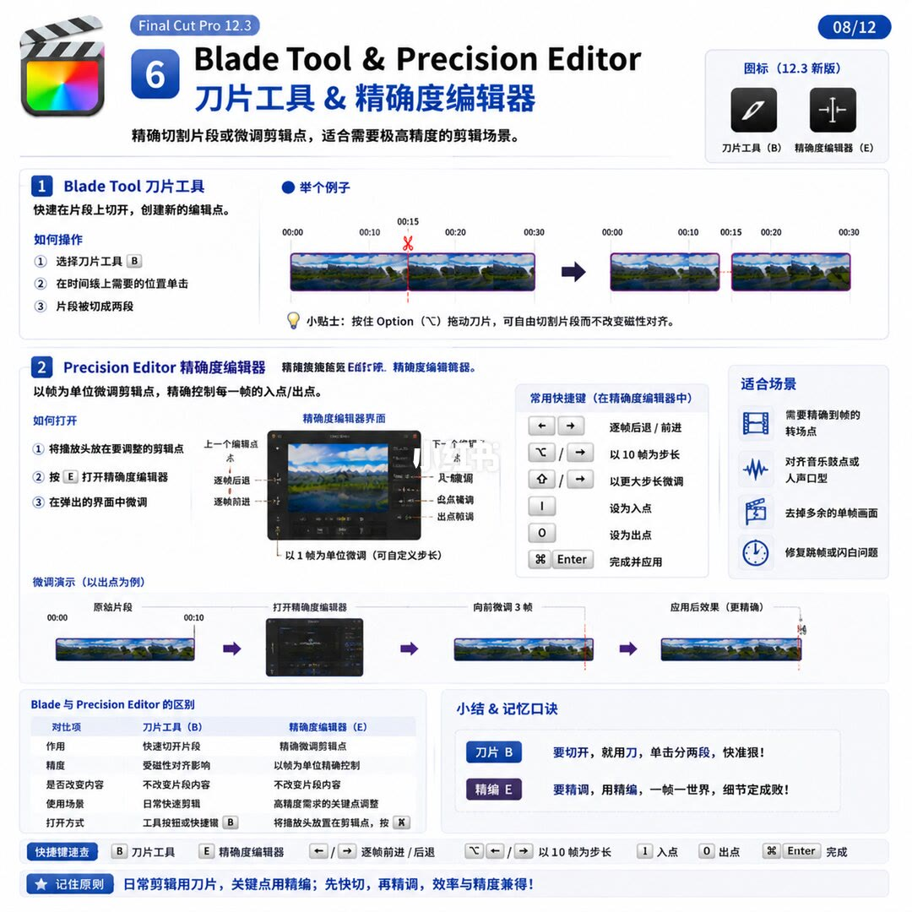
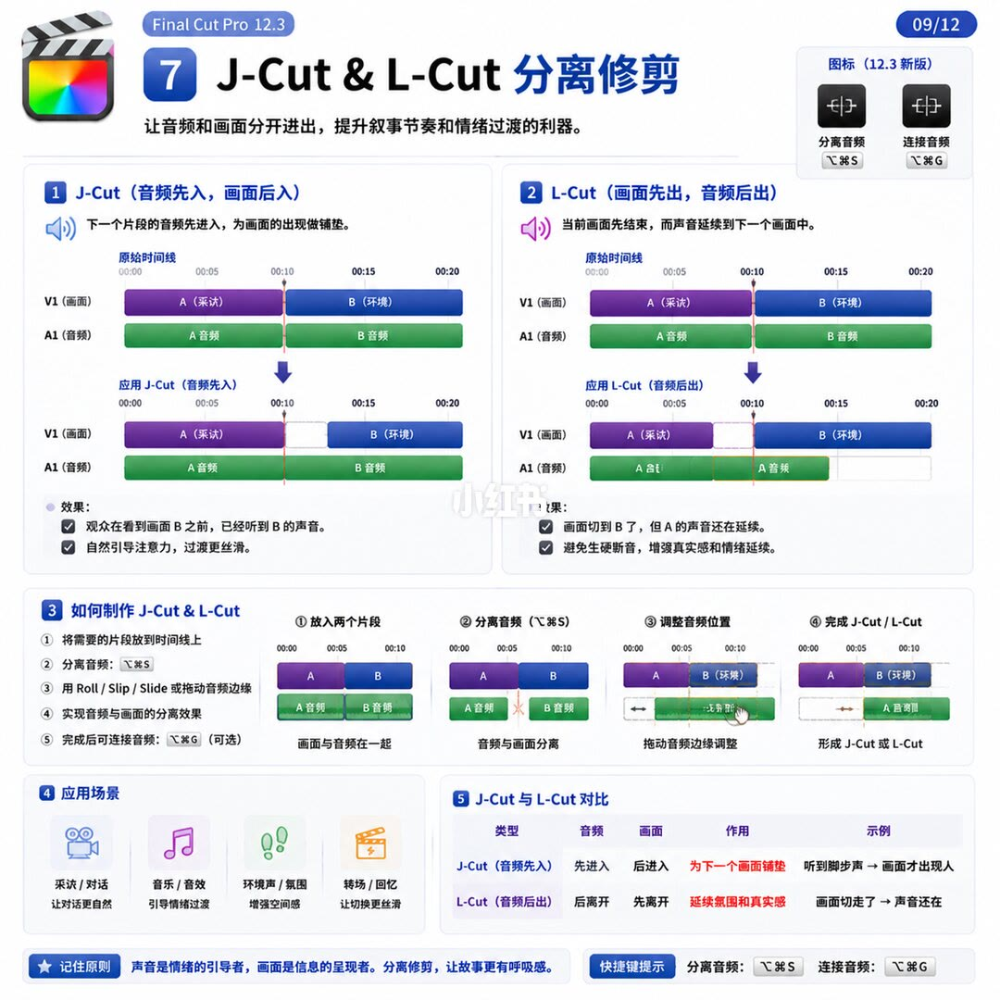
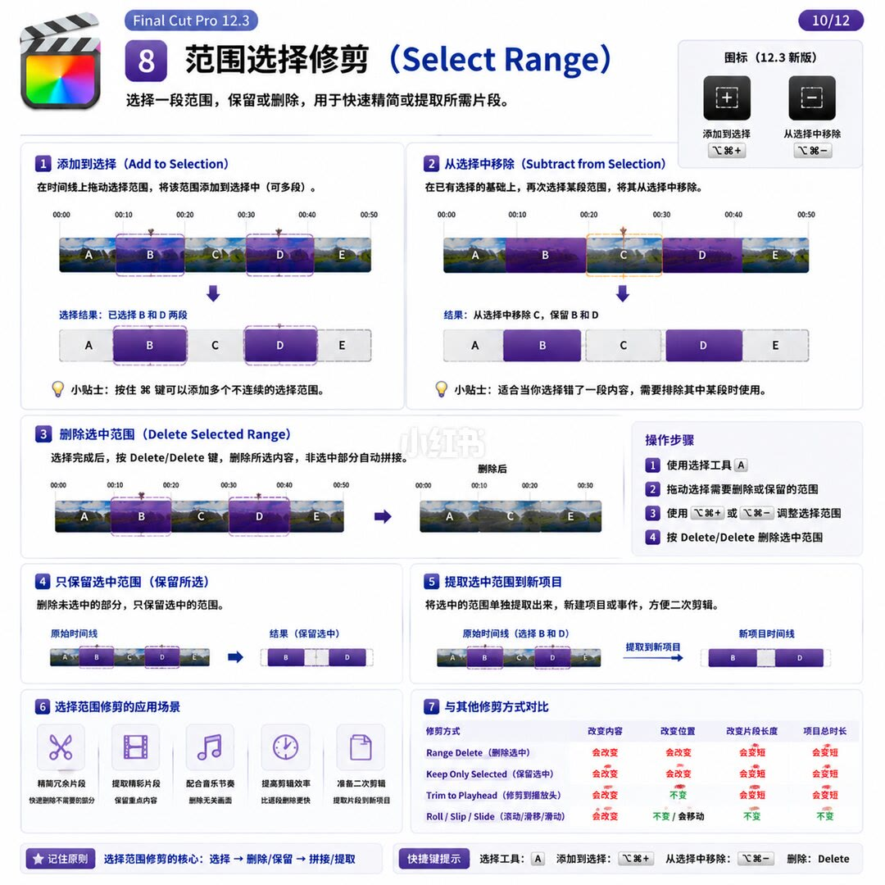

图文实录 · 小红书 · 敖舜
建议收藏｜FCP 修剪操作保姆级教程
修剪是在问四件事：入点、出点、两个镜头之间的切点、片段在时间线上的位置有没有变。有媒体余量才能向外延长。前五页图解把 Ripple、Roll、Slip、Slide 和修剪到播放头都做成选择工具 A 加光标位置；后面的总表和速查表又改成 T、Y、U、P 等专用键。两套印法互相打架，操作时以你正在看的那一页图为准，不要把后页的字母回写成前页没印的菜单。
1/13
先问四件事，再看有没有余量

页题是 Final Cut Pro 修剪操作全攻略。黄条副题：掌握这 5 大修剪 + 常用工具，剪辑效率翻倍。「翻倍」没有对照。左上四问：镜头从原素材的哪一帧开始；在哪一帧结束；两个镜头之间切点发生在哪一帧；镜头在时间线上的位置有没有变化。
媒体余量定义为原素材中未被使用的画面。只要有余量，就可以继续向外延长、滚动切点、滑移画面或添加转场。示意图文件名 P101C0126.MP4，原素材 20 秒。正在使用 7 秒，刻度 00:00、00:05、00:12、00:20。入点前余量 5 秒，出点后余量 8 秒。
哪些情况有余量，封面只列四种。只选中一部分拖入时间线：原素材 20 秒，只选第 5–12 秒，有余量，前面 5 秒、后面 8 秒。整段全部拖入：没有余量，只能向内缩短，无法向外延长。用刀片切开后删除一部分：有余量，原始媒体并没有被切坏，拉开边缘可恢复被删除的画面。导入已经导出的成片：例如先导出 10 秒再导入 FCP，没有余量，FCP 只知道这 10 秒。页脚：修剪只改变项目中的使用范围，原始素材文件不会被真正剪掉。
和第 2 页图解的冲突：封面四种情况，第 2 页写成五种，多了添加转场；封面整段拖入写「没有余量」，第 2 页写「基本没有余量」；封面文件名是 P101C0126.MP4，第 2 页换成另一段素材。以各页自己的图为准。
2/13
四问对应入点、出点、剪辑点、位置
标题：修剪的核心逻辑。副题：所有修剪操作，都是围绕这 4 个问题。四问分别决定入点（In Point）、出点（Out Point）、剪辑点（Edit Point）、位置（Position）。
余量定义与封面同一句。示意图文件名印成 DJI_202605160530.MP4，原素材仍是 20 秒，正在使用 7 秒，刻度仍是 00:00、00:05、00:12、00:20，入点前余量 5 秒，出点后余量 8 秒。
五种情况。从浏览器中只选中一部分拖进时间线：有余量，前面 5 秒、后面 8 秒。整段全部拖进：基本没有余量，只能向内缩短，不能向外延长。时间线里用刀片切开再删除一部分：通常有余量，刀片只是把时间线片段分开，原始媒体并没有被切坏，可以拉开边缘恢复被删除的画面。添加转场（如淡入淡出）：转场需要消耗两边的余量，没有余量时无法添加或会提示「余量不足」；这一格的结论写成有余量时可添加转场。导入已经导出的成片：没有余量，例子仍是先导出 10 秒再导入。页脚两句：修剪只改变项目中的使用范围，原始素材文件不会被真正剪掉；判断能否修剪、能修到哪里，关键看媒体余量。
3/13
波纹修剪：一边改长短，后面跟着挪
标题：1 Ripple Edit 波纹修剪。定义：改变片段的起点或终点，后面的片段会自动跟着移动，项目总时长也会改变。图标注「12.3 新版」，在片段边缘出现单边修剪光标。它改变三样：当前片段的长度、后面所有片段的位置、项目总时长。
例子：修剪前 A、B、C 各 10 秒，总长 30 秒，刻度到 00:30。把 B 的结尾向左缩短 3 秒后，B 为 7 秒，C 自动向左移动，图上能看到 00:17 和 00:27，结论写项目时长从 30 秒变成 27 秒。
方法 1：使用选择工具 A。按 A，把鼠标移到片段左或右边缘，出现修剪光标后拖动。图上片段文件名是 DJI_20260516.MP4 一类，个别字符无法确认。方法 2 微调（逐帧或逐 10 帧）：逗号向左 1 帧，句点向右 1 帧，Shift 加逗号向左 10 帧，Shift 加句点向右 10 帧。
修剪开头（左边缘）：向右拖缩短，向左拖延长（需有余量）。修剪结尾（右边缘）：向左拖缩短，向右拖延长（需有余量）。小贴士：向右拖右边缘时，如果后面没有余量，片段无法继续变长，会出现红色阻挡提示。
适合场景四条：删除说话前的停顿；剪掉镜头末尾的多余部分；调整整条片子的节奏；让后续素材自动跟着移动。对比表：Ripple 改变片段长度，后面跟着移动，项目时长改变。Roll 只移动两个片段之间的切点，项目时长不变。Slip 片段长度和位置不变，只更换片段内部内容。Slide 移动整个片段，前后片段被修剪，项目时长不变。这一页没有给 Roll、Slip、Slide 单独的字母键。
4/13
滚动修剪：切点搬家，总长不动

标题：2 Roll Edit 滚动修剪。定义：同时调整两个片段的出点和入点，一边变长，一边变短，项目总时长保持不变。图标：在两个片段交界处出现滚动修剪光标。它改变：前一个片段的出点、后一个片段的入点；项目总时长不变。
例子：修剪前 A、B 各 10 秒，切点在 00:10，总长 00:20。向右滚动（扩大 A，缩小 B）后切点到 00:13，A 从 10 秒变为 13 秒，B 从 10 秒变为 7 秒，总时长仍为 20 秒。
操作仍是选择工具 A。鼠标放在两个片段交界的中间，出现滚动修剪光标后拖动。正确位置在交界正中。错误位置靠近边缘，出现单边修剪光标，图上写变成 Ripple。向右拖：前一个变长，后一个变短。向左拖相反。向右拖的过程：左侧出点向右、右侧入点向右，左长右短。向左拖：左侧出点向左、右侧入点向左，左短右长。总时长都不变。
适合场景：调整镜头停留的长短；保持节奏感、不破坏时间线；对话场景中微调停顿；配合音乐节奏调整画面切点；精剪时微调切点位置。其中「画面切点」一行字略挤，能确认是在说切点位置。
对比表列了修剪方式、影响内容、是否改变总时长、后面片段位置。Ripple：一个片段的边缘，会改变，会移动。Roll：两个片段的切点，不会改变，不会移动。Slip：片段内部内容，不会改变，不会移动。Slide：整个片段位置，不会改变总时长，后面片段会移动。页脚：Roll Edit 等于滚动切点，不改变项目时长，只在两个片段之间分配时间。快捷键提示印成：A 选择工具 + 拖动切点 = Roll Edit。
5/13
滑移修剪：外框不动，里面的画面在滑

标题：3 Slip Edit 滑移修剪。定义：片段在时间线上的位置和时长不变，只是片段内容在里面滑动。图标：在片段中部出现滑移修剪光标。它改变片段内容（In/Out 点）；位置不变、片段时长不变、项目总时长不变。
例子对照「修剪前」和「向右滑移 5 秒（内容向后移）」。时间刻度印有 00:00、00:10、00:20、00:30。结论：看起来没变，但内容已经向后移动了 5 秒。向右滑移是内容向后移动，向左滑移是内容向前移动。两侧都写片段位置不变、时长不变。
操作：选择工具 A，鼠标放在片段中部，出现滑移修剪光标后拖动。小贴士三条：调整一个镜头的开始时机；调整一个镜头的结尾时机；不想影响节奏和总时长。
适合场景能确认的有：调整动作开始点（让动作更完整）、调整动作结尾点（让结尾更完整）、配合音频节奏微调画面内容、不影响节奏和总时长的微调、纪录片/B-roll 精细调整。对比表这一页多了「改变内容」列。Ripple：内容是、时长会改变、位置会移动、项目总时长会改变。Roll：内容否，其余不变。Slip：内容是，时长、位置、项目总时长都不变。Slide：时长不变、位置会移动、项目总时长不变；「改变内容」那一格在这一行没有单独读成「是」。页脚：Slip Edit 等于内容滑动，位置不变，时长不变，总时长不变。快捷键提示：A 选择工具 + 拖动片段中部 = Slip Edit。
6/13
滑动修剪：这一页写成整段一起挪

标题：4 Slide Edit 滑动修剪。定义印成：同时移动两个片段（及其之间的所有片段），前后内容一起滑动，总时长不变。图标：在片段上拖动出现滑动修剪光标。它改变：选中片段及其周围的内容；整体在时间线上向左或向右移动；片段之间的相对位置不变；项目总时长不变。
例子：滑动前 A、B、C、D，图上每段标 10 秒，刻度到 00:40。向右滑动 5 秒：选中 B、C 及其之间内容，整体向右移动 5 秒，A 和 D 也跟着动，总时长不变。这和同页对比表里「移动整个片段」不是同一句话，也和第 11 页「影响所选片段及其右侧片段」不是同一范围。以这一页的例子为准：动的是 B、C 这一段范围，A 和 D 跟着被牵动。
操作：选择工具 A，在需要移动的片段范围内拖动（靠近中间区域），出现滑动修剪光标后拖动。小贴士：Slide 是整个范围一起动，不是单独动某个片段，适合调整整段内容的位置，同时保持节奏和关系。
向右滑动过程写了：前面内容跟着后移、后面内容跟着后移、片段之间相对位置不变。向左滑动对称的三行里，有一行方向无法确认。适合场景：调整一段内容在时间线上的位置；保持音乐/节奏不被打乱；保证镜头之间的关系不变；为后面内容腾出或让出空间；需要整体移动多个片段。
对比表：Ripple 不改内容、时长会改变、位置会移动，影响范围是从修改点开始、后面全部影响。Roll 不改内容、时长和位置不变，只影响两个片段的切点。Slip 会改内容、时长和位置不变，只影响当前片段内容。Slide 不改内容、时长不变、位置会移动，影响所选范围及其前后内容。页脚：Slide Edit 等于整体移动，关系不变，时长不变。快捷键提示：A 选择工具 + 拖动片段中间 = Slide Edit。
7/13
修剪到播放头：修掉播放头一侧，片子变短
标题：5 Trim to Playhead 修剪到播放头。定义：快速将片段的某一侧修剪到播放头位置，常用于去掉不需要的前面或后面部分。两个图标：修剪到播放头（左侧）、修剪到播放头（右侧）。
它改变什么：修剪到播放头左侧，修的是片段的右侧部分；修剪到播放头右侧，修的是片段的左侧部分；项目总时长会改变（变短）。名字里的左右，指的是保留下来的那一侧，不是被删掉的那一侧。
例子都把播放头放在 00:15，片段从 00:00 到 00:20。左侧：片段结束于 00:15，删掉后面 00:15–00:20。右侧：片段开始于 00:15，删掉前面 00:00–00:15。另一组过程把播放头放在 00:12：左侧修剪后图上标 12 秒；右侧修剪后标 8 秒。
如何操作，左侧：播放头放到想要的结束位置，选中片段，快捷键 Option + ]，或点击工具栏「修剪到播放头左侧」图标。右侧：播放头放到想要的开始位置，选中片段，快捷键 Option + [，或点击工具栏右侧图标。小贴士：先移动播放头再执行；只会修剪选中片段；适合快速去掉不需要的前段或后段，「前段/后段」有的字印得很挤，无法确认是不是写成「前缀」。页脚：Trim to Playhead 等于修掉不要的一侧，片段变短，项目总时长变短。快捷键提示：Option + ] 等于左侧，Option + [ 等于右侧。
对比表把这一项的英文印成 Trim to Playheed。表意是：片段长度会改变、内容会改变、位置不变、项目总时长会改变。同表 Ripple 长度和内容会改变、位置会移动、总时长会改变；Roll 四项都不变；Slip 内容会改变、其余不变；Slide 位置会移动、总时长不变。和第 11、12、13 页的冲突：这三页把修剪到播放头印成字母 P，这一页印的是 Option + ] 和 Option + [。以这一页的键为准读这一页，不要改写成 P。
8/13
刀片切开，精确度编辑器逐帧修切点

标题：6 Blade Tool & Precision Editor，刀片工具 & 精确度编辑器。副题：精确切割片段或微调剪辑点，适合需要极高精度的剪辑场景。图标一行印成刀片工具（B）、精确度编辑器（E）。
刀片：快速在片段上切开，创建新的编辑点。步骤：选择刀片工具 B；在时间线上需要的位置单击；片段被切成两段。例子刻度能确认 00:00、00:15、00:30 一带，红剪刀落在中间。小贴士：按住 Option 拖动刀片，可自由切割片段而不改变磁性对齐。
精确度编辑器：以帧为单位微调剪辑点，精确控制每一帧的入点/出点。打开步骤印成：播放头放在要调整的剪辑点；按 E 打开；在弹出的界面中微调。界面标注里能确认上一个编辑点、下一个编辑点、逐帧、入点、出点，以及「以 1 帧为单位微调（可自定义步长）」。个别按钮上的字无法确认。常用快捷键：左右方向键逐帧后退/前进；I 设为入点；O 设为出点；⌘Enter 完成并应用。10 帧步长写在 Option 与方向键旁，更大步长写在 Shift 与方向键旁；左右是否都印了，部分键帽无法确认。微调演示以出点为例，有一格写向前微调 3 帧。
适合场景：需要精确到帧的转场点；对齐音乐鼓点或人声口型；去掉多余的单帧画面；修复跳帧或闪白问题。
对比表：刀片作用是快速切开，精度受磁性对齐影响，不改变片段内容，日常快速剪辑，打开方式是工具按钮或快捷键 B。精确度编辑器作用是精确微调剪辑点，以帧为单位，不改变片段内容，用于高精度关键点；表头仍写（E），但「打开方式」一格印成把播放头放在剪辑点后按 ⌘E。同一页里 E 和 ⌘E 同时出现。口诀：刀片 B，要切开，就用刀，单击分两段；精编 E，要精调，用精编，一帧一世界。页脚：日常剪辑用刀片，关键点用精编；先快切，再精调。和第 11、12 页的冲突：那两页把精确度编辑器印成 ⌘B，不是 E，也不是 ⌘E。
9/13
J-Cut 声先入，L-Cut 声后出

标题：7 J-Cut & L-Cut 分离修剪。副题：让音频和画面分开进出，提升叙事节奏和情绪过渡的利器。图标：分离音频 ⌥⌘S，连接音频 ⌥⌘G。
J-Cut（音频先入，画面后入）：下一个片段的音频先进入，为画面的出现做铺垫。图上分 V1（画面）和 A1（音频）。片段标注能确认 A 是采访、B 是环境；「环境」有的字略糊。应用后 B 的音频伸进 A 的画面下面。效果：观众在看到画面 B 之前，已经听到 B 的声音；自然引导注意力，过渡更丝滑。
L-Cut（画面先出，音频后出）：当前画面先结束，而声音延续到下一个画面中。效果：画面切到 B 了，但 A 的声音还在延续；避免生硬断音，增强真实感和情绪延续。
制作步骤：把片段放到时间线上；分离音频 ⌥⌘S；用 Roll / Slip / Slide 或拖动音频边缘；实现音频与画面的分离；完成后可连接音频 ⌥⌘G（可选）。四格示意图：放入两个片段时画面与音频在一起；分离后音频与画面分开；再拖音频边缘；完成 J-Cut 或 L-Cut。
应用场景：采访/对话，让对话更自然；音乐/音效，引导情绪过渡；环境声/氛围，增强空间感；转场/回忆，让切换更丝滑。对比表：J-Cut 音频先进入、画面后进入，为下一个画面铺垫，示例是听到脚步声、画面才出现人。L-Cut 音频后离开、画面先离开，延续氛围和真实感，示例是画面切走了、声音还在。页脚：声音是情绪的引导者，画面是信息的呈现者。和第 13 页的冲突：实战页把 J/L 的键印成含 S、G 的另一组组合，修饰键与这一页的 ⌥⌘S、⌥⌘G 对不上。
10/13
先圈范围，再删掉或只留选中的

标题：8 范围选择修剪（Select Range）。副题：选择一段范围，保留或删除，用于快速精简或提取所需片段。图标：添加到选择 ⌥⌘+，从选择中移除 ⌥⌘-。
添加到选择：在时间线上拖动，把该范围加到选择中，可多段。图上结果写已选择 B 和 D 两段。小贴士说按住某个键可以添加多个不连续范围，键帽无法确认。从选择中移除：在已有选择上再选一段，把它移出。结果写从选择中移除 C，保留 B 和 D。小贴士：适合选错了一段、需要排除其中某段。
删除选中范围：选择完成后按图上印的 Delete/Delete，删除所选内容，非选中部分自动拼接。删除后的示意图留下接在一起的段。只保留选中范围：删除未选中的部分。提取选中范围到新项目：单独提取出来，新建项目或事件。图上从选了 B 和 D 的时间线指向新项目时间线。
操作步骤：使用选择工具 A；拖动选择需要删除或保留的范围；用添加到选择、从选择中移除那两个组合键调整；再按 Delete/Delete。应用场景能确认的有精简冗余、提取精彩片段、配合音乐节奏、提高剪辑效率、准备二次剪辑；下面一行小字多处无法确认。
对比表：Range Delete 与 Keep Only Selected 都是内容会改变、位置会改变、片段长度会变短、项目总时长会变短。Trim to Playhead：内容会改变、位置不变、长度和总时长会变短。Roll / Slip / Slide：内容会改变，位置一格印成「不变/会移动」，片段长度不变，项目总时长不变。这一行把三种工具合成一格，没有分开写谁改内容、谁不改。页脚原则：选择，然后删除或保留，再拼接或提取。快捷键提示印了选择工具 A、添加到选择、从选择中移除、删除 Delete。和第 12 页的冲突：速查表把添加到选择、从选择中移除印成 Control、Command 加等号或减号，不是这一页的 ⌥⌘+、⌥⌘-。
11/13
总表把前几页的 A 拆成一组字母
标题：10 所有修剪方式总对比。副题：一张表搞懂，剪辑效率翻倍。核心思路仍是封面那四问。图例：视频片段、音频片段、切点位置、被影响片段、未受影响片段；「被影响」一行字略糊，按图例位置记。
表列：修剪方式、时间线示意、影响范围、改变内容、时间线位置、适用场景、快捷键。快捷键列印成：Ripple A，Roll T，Slip Y，Slide U，Trim to Playhead P，Blade B，Precision Editor ⌘B。这和 3/13–6/13 的「全部是选择工具 A，靠光标位置区分」冲突，也和第 7/13 的 Option + ]、Option + [、第 8/13 的 E / ⌘E 冲突。总表以它自己印的字母为准，不回头改前页。
各行能确认的意思：Ripple 影响切点右侧所有片段，改变切点位置、后面片段整体移动，时间线位置会变化，场景是删除片段、缩短空隙、调整节奏。Roll 只影响两个相邻片段的切点，总时长不变，位置不变，用来微调镜头时长、保持节奏稳定。Slip 只影响所选片段本身内容，改入点和出点，位置不变，用来保留时长和位置、更换镜头内容。Slide 影响所选片段及其右侧片段，改位置、内容不变，位置会变化，用来调整片段位置、保持间隙和时长。这一句的影响范围和第 6/13「所选范围及其前后内容」不一致。Trim to Playhead 只影响所选片段靠近播放头的一端，从边缘修到播放头，位置不变。Blade 在任意位置手动切断，切成两段、不自动移动，位置不变。Precision Editor 对切点做帧级调整，位置一格印成「视情况而定」，场景是极精确的切点或同步音画。
口诀：波纹，切点动，后面跟着动；滚动，切点在动，总长不动；滑移，内容在滑，位置不动；滑动，整体在滑，内容不变；到头，修到头，立即停；刀片，一刀下去，变两段；精编，帧级微调，要精准。快速判断把上述字母又写了一遍：删一段让后面靠上来用 Ripple（A）；微调两个镜头时长用 Roll（T）；换内容但时长和位置不变用 Slip（Y）；整体移动用 Slide（U）；修到播放头用 P；中间切开用 B；精确到帧用 Precision Editor（⌘B）。页脚心法：先确定要调整的是时间线结构，还是镜头内容。下一页预告印成第 11/12 页常用修剪快捷键速查表。
12/13
速查表再给一套键，和范围页也不完全相同
标题：11 FCP 修剪快捷键速查表。副题仍是掌握这些快捷键，剪辑效率翻倍。图例五类：修剪工具、移动/调整、分割工具、磁性时间线、其他常用。角标仍是 Final Cut Pro 12.3。
修剪工具类印成：范围选择工具 Select Range，键 A，选择一段范围进行修剪、删除、添加到选择等，括注万能修剪起点。滚动修剪工具 Roll Tool，键 T，不改变两个片段总时长，微调切点。滑移修剪工具 Slip Tool，键 Y，不改变片段在时间线上的位置，更换镜头内容（入点/出点）。滑动修剪工具 Slide Tool，键 U，不改变片段时长，整体移动片段在时间线上的位置。修剪到播放头 Trim to Playhead，键 P，把所选片段的入点或出点修剪到播放头。刀片工具 Blade Tool，键 B，在播放头位置把片段切成两段。精确度编辑器 Precision Editor，键 ⌘B，对选中的编辑点做帧级精确调整（入点、出点或切点）。这里的 A 不再是第 3–6 页那个通用选择工具，而是范围选择；P 和 ⌘B 也和第 7、8 页不同。
修剪操作类：连接片段（默认）Connect，⌘K，连接所选片段，移除中间的编辑点（不留空隙）。波纹删除 Ripple Delete，⌥⌘⌫，删除选中内容，后面所有片段自动向前填补。删除 Delete，⌫，删除选中内容，后面片段位置不变（产生空隙）。添加到选择，印成 ⌃⌘+=。从选择中移除，印成 ⌃⌘-。这和 10/13 的 ⌥⌘+、⌥⌘- 不是同一组修饰键。选择播放头下方片段的键帽无法确认，说明文字是选中播放头下方的片段。
时间线导航：播放/停止空格键；向左一帧 ←；向右一帧 →；向后 1 秒 J；向前 1 秒 L；跳到入点 I；跳到出点 O；跳到片段开始 ⇧I；跳到片段结尾 ⇧O。磁性时间线开/关印成 ⌥⌘M。故事情节开/关印成 ⇧⌘Y。其他：撤销 ⌘Z，重做 ⇧⌘Z，复制印成 Duplicate、键 ⌘D，剪切 ⌘X，粘贴 ⌘V。
记忆小技巧：A 选范围，T 调切点；Y 换内容，U 移位置；P 修到头，B 一刀断。最后半句在说精编，组合键字形无法确认，不把它写成和表内 ⌘B 相同。工作流：先用 A 选择范围；再用 T/Y/U 精细调整；用 P 修到播放头；用 B 切分或用精确度编辑器微调；最后用连接和波纹删除收尾。其中「T/Y/U」有一处字迹接近 I/Y/U，无法确认是否印了 I。小贴士：多练习比死记更有效；可以在「编辑」>「自定快捷键」中查看或修改；记住核心工具 A/T/Y/U/P/B 再加精编那一格，可解决 95% 的修剪场景。95% 没有样本。页脚：先选后调，先粗后精，节奏优先，流畅为王。下一页预告：第 12/12 页旅行 Vlog 实战案例。
13/13
旅行例子把字母键又用了一遍
标题：12 旅行 Vlog 实战案例，什么时候用 Ripple、Roll、Slip、Slide、J/L-Cut。副题：通过真实剪辑场景，帮你快速判断并选择最合适的修剪方式。右上判断四问：切点动不动；镜头内容变不变；位置变不变；声音先还是画面先。
Ripple：缩短空镜，让节奏更紧凑，去掉中间多余空镜，后面的内容整体前移。时间线示意里能确认海景、空镜、雪山、徒步一类标签，部分镜头名无法逐字确认。推荐方式旁印 A。理由：删除一段素材，后面片段自动前移，时间线整体缩短，节奏更紧凑。
Roll：微调两镜头的切点，让雪山早一点出现，节奏不变。切点向左，前段变短、后段变长。旁印 T。理由：只影响两个相邻片段，改变切点，总时长不变，节奏稳定。
Slip：更换镜头内容，保留入点和出点，换一个雪山镜头。示意从 B1 换成 B2，前后片段还在。旁印 Y。理由：只改变片段内容，入点和出点不变，前后位置不变，节奏不变。
Slide：整体调整片段位置，把徒步镜头挪到前面。旁印 U。理由印成整体移动片段及其后所有片段，片段内容不变，调整叙事顺序，时间和时长不变。这和第 6/13「选中 B、C 及其之间，A 和 D 也跟着动」不是同一个动作，和第 11/13「及其右侧片段」更接近。
Trim to Playhead：播放头所在处切掉右端。旁印 P。理由：从片段边缘剪到播放头，去掉多余部分。J-Cut / L-Cut：说话声先出来再看到人；画面先切，环境声延续。键位印成含 S 和 G 的组合。修饰键无法确认是否与第 9 页的 ⌥⌘S、⌥⌘G 相同；不要把两页合成一个快捷键。
快速选择指南把上面六种又缩成：删一段让后面提前，Ripple（A）；只改切点不改时长，Roll（T）；只换内容，Slip（Y）；整体挪位置改顺序，Slide（U）；修剪到播放头，P；声音和画面分开，J-Cut/L-Cut。剪辑心法：先搭结构，再调节奏，最后精修细节；先粗剪（Ripple / Slide），后精剪（Roll / Slip）；多用音频分离（J/L-Cut）；每次只解决一个问题。实践建议四步：先搭故事骨架，再用 Roll / Slip 精修切点和内容，再用 J/L-Cut 优化听感，然后导出、复盘、再剪。最后一句「效果翻倍」没有对照。页脚：好的剪辑不是炫技，而是让故事更清晰、节奏更流畅、情绪更到位。
汇总
先看余量和四问，键以所在页为准
结论
有余量才能向外延长、滚切点、滑内容和加转场；修剪不改原始文件。Ripple 改一边并带动后面、总长变。Roll 只搬两个镜头之间的切点、总长不变。Slip 外框不动、里面的入出点在滑。Slide 在第 6 页是一整段范围一起动。修剪到播放头会把片子修短。J-Cut 是下一段的声音先进来，L-Cut 是上一段的声音留在下一段画面里。字母键从第 11 页才变成 A/T/Y/U/P/B/⌘B，不能用来改写第 3–8 页已经印出的 A、Option+]、Option+[、B、E。
支撑页
四问和余量在 1/13、2/13。Ripple 的 30 秒变 27 秒在 3/13。Roll 的 10+10 变 13+7 在 4/13。Slip 向后 5 秒在 5/13。Slide 选中 B、C 在 6/13。Option+] 与 Option+[ 在 7/13。刀片 B 与精确度编辑器在 8/13。J/L 和 ⌥⌘S、⌥⌘G 在 9/13。范围选择在 10/13。总表字母键在 11/13。速查表在 12/13。旅行例子在 13/13。
边界
图上页角是 02/12 到 12/12，封面无页码；文件第 11 张也印 10/12，序号从 8 跳到 10，没有印 9。封面余量四种、文件名 P101C0126.MP4；第 2 页五种、文件名换成 DJI 那段，整段拖入从「没有余量」改成「基本没有余量」。Slide 的影响范围在第 6、11、13 页各写各的。精确度编辑器同一套笔记里出现 E、⌘E、⌘B。范围页的添加到选择是 ⌥⌘+ / ⌥⌘-，速查表是 ⌃⌘+= / ⌃⌘-。实战页 J/L 的修饰键无法确认。选择播放头下方片段的键、范围页「按住某键多选」的键帽、精确度编辑器里 Option/Shift 是否左右方向都印了，无法确认。效率翻倍和 95% 是口号。这些键没有在软件里复核，只记录图上印出来的字。